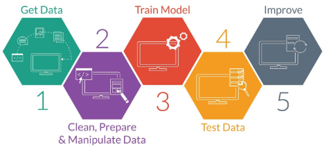
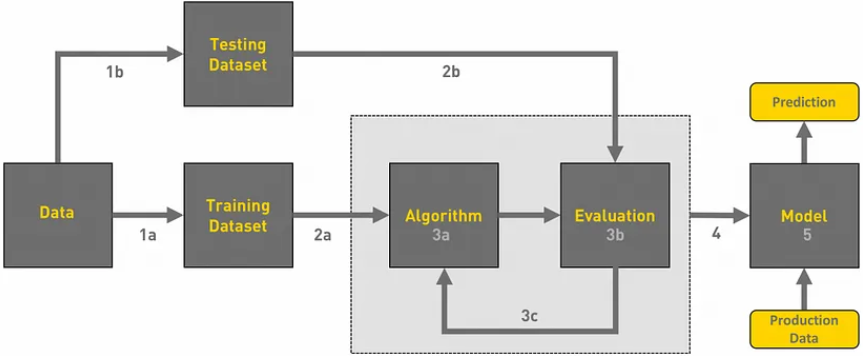
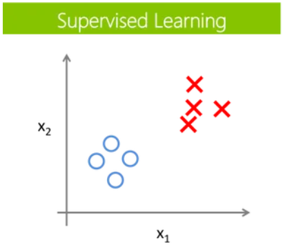
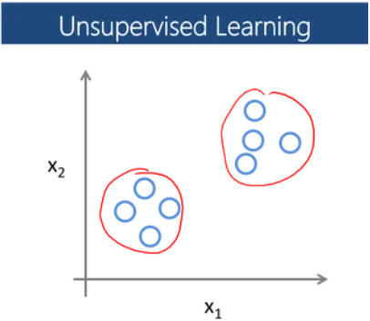
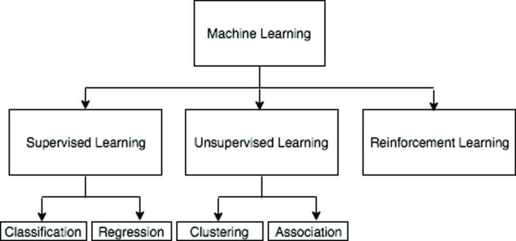
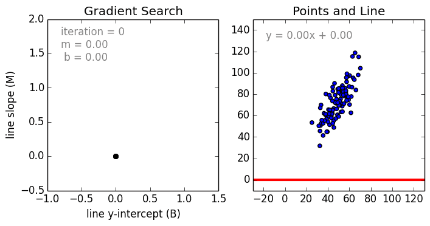
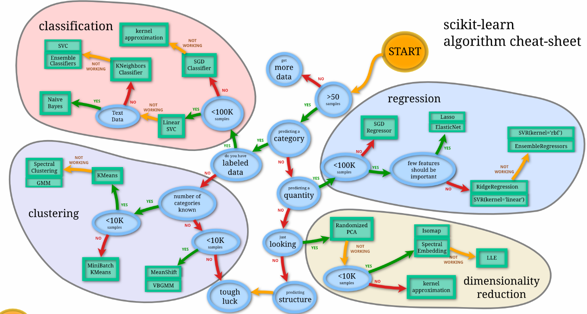
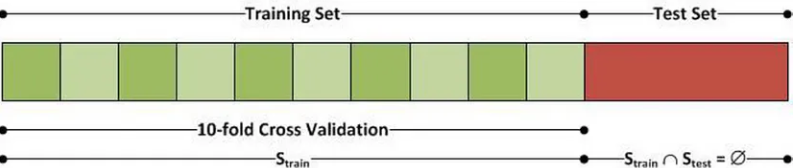
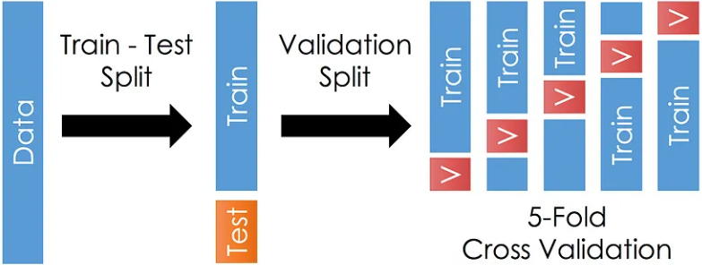

v.
Overview
- Describe machine learning and its applications
- Explain the different kinds of machine learning approaches and how they are used
Machine Learning
& its Applications
ML = data + algorithm
Machine Learning Process
ML Training Workflow
Define the Problem
- Before we even think if getting data, we need to define the question we would like to answer
- Influences what data we need to collect, what algorithms we can choose from
- Something we can test against later
Get Data
- Before we can do something interesting with the data, we need data
- Ideally, something in a sensible format that can be easily loaded and processed
- Expect to need to clean up data / perform validation in this phase
Data Collection
- Need to make sure we have enough data
- - data-driven means that data need to be not only available but also sufficient
- Data sources:
- $\qquad\,$Live: from running services
- Historical: from off-line sources
- Can combine multiple data sources
Data Sources
- Public Datasets
- - Accessible datasets available for free use, e.g., UCI Machine Learning Repository, Kaggle datasets
- Governmental agencies often provide rich data for research, such as census data, health statistics, etc. - - Accessible datasets available for free use, e.g., UCI Machine Learning Repository, Kaggle datasets
- Web Scrapping
- - Extracting data from websites using tools or libraries to gather information for analysis
- e.g. Social medium platforms provided valuable data for sentiment analysis, user behavior studies, and trend predictions. - - Extracting data from websites using tools or libraries to gather information for analysis
Data Sources (2)
- Commercial Data Provider
- - Companies offering curated datasets for purchase or subscription, catering to specific industries
- APIs and live feeds from services offering data access - - Companies offering curated datasets for purchase or subscription, catering to specific industries
- Enterprise Data
- - Organisations' internal data sources, including customer information, transaction logs, etc.
- e.g. supermarket, department stores, big companies - - Organisations' internal data sources, including customer information, transaction logs, etc.
Data Sources (3)
- Research Institutions
- - Collaborate with academic institutions to access specialised datasets for research purposes
- Sensor Data
- - Collected from various sensors, e.g., IoT devices, weather stations, healthcare monitors
- Simulated or Generated Data
- - Synthetic data used to augment real datasets or simulate scenarios for training models
Data Preparation
- The collected data is rarely perfect
- It may contain outliers - need to be filtered out
- Errors in the data:
- - missing records
- doesn't make sense
- misspelt fields - - missing records
- Calculated columns (e.g. date of birth $\to$ age)
- Encoding categorical variables into numerical form suitable for machine learning models
- Scaling and Normalisation: Scaling features to a uniform range and normalising distributions for model effectiveness.
Data Preparation (2)
- Imbalanced Data Handling
- - Addressing class imbalance through techniques like oversampling, undersampling, or using specialised algorithms
- Dimensionality Reduction
- - Reducing the number of features through techniques like PCA to enhance model efficiency
- Data Transformation
- - Transforming data to meet model assumptions, e.g., log transformations for skewed distributions
- Data Splitting
- - Partitioning data into training, validation, and test sets for model development and evaluation
Feature Selection
- Grasp the significance of features in relation to the predictive task based on statistical tests
- Identify and remove highly correlated features to prevent redundancy
- Iterate through different selection methods and evaluating their impact on model performance
- Someone may call it Feature engineering
Data for Supervised Learning

- Each data tagged with the correct label
- 2 sub-categories:
- - Classification: target variable is categorical$\qquad\qquad$
- Regression: the target variable is continuous$\qquad\qquad$$\qquad\qquad$ - - Classification: target variable is categorical$\qquad\qquad$
- Data to prepare:
- - training set
- expected output (labels)
- validation set - - training set
Data for Unsupervised Learning
- Usually a clustering problem
- Unlabelled, uncategorised data without priori$\qquad\qquad$
knowledge - Data to prepare:
- - training set
- validation set - - training set
Model / Algorithm
ML Algorithms at a Glance
Supervised Learning (SL)
Concerned with getting
the correct output given
labeled training data
Concerned with getting
the correct output given
labeled training data
Unsupervised Learning (UL)
Concerned with discovering
patterns in the data without
pre-existing labels
Concerned with discovering
patterns in the data without
pre-existing labels
Reinforcement Learning (RL)
Concerned with how agents take
actions in an environment to
maximize cumulative reward

Concerned with how agents take
actions in an environment to
maximize cumulative reward
ML $\not =$ Neural Networks!
Classification Algorithms
- K-nearest Neighbour
- Naive Bayes
- Decision Trees / Random Forest
- Support Vector Machine
- Logistic Regression* - for binary classification
Classification Example

Regression Algorithms
- Linear Regression
- Support Vector Regression
- Decision Tress / Random Forest
- Gaussian Progresses Regression
- Ensemble Methods
Regression Example
Clustering Algorithms
- K-Means Clustering
- Gaussian mixtures
- Boosting
- Hierarchical Clustering
- Spectral Clustering
Unsupervised Clustering Example

Choose a Model
Model Problems
- Model Interpretability
- - Complex models lacking interpretability, hindering understanding of decision-making processes
- Computational Resources
- - Resource-intensive models demanding high computational power and memory, limiting their scalability
- Hyperparameter Tuning
- - The challenge of finding optimal hyperparameter to improve model performance without overfitting
Over-/Under- Fitting Problems
- Overfitting
- - Occurs when a model learns too much from the training data, performing well on training but poorly on unseen data
- Underfitting
- - Indicates a model's inability to capture the underlying patterns in the data, resulting in poor performance on both training and test data
Model Evaluation
- How well does the model work?
- How can you assess the accuracy?
- We need to know how well it does on the data we $\qquad\qquad\qquad$
have 'answers' for - Split source data into training/test dataset
Evaluation Methods
- Train-Test Split
- - Dividing data into training and test sets
to assess model performance on unseen data - - Dividing data into training and test sets
- Cross-Validation
- - repeatedly split data into subsets for training and validation, reducing variability in performance estimation
 - - repeatedly split data into subsets for training and validation, reducing variability in performance estimation
Evaluation Methods (2)
- Performance Metrics
- - Assessing model performance using metrics like accuracy, precision, recall, F1-score, ROC-AUC, etc., based on the task requirements
- Confusion Matrix
- - Tabulation of true positives, true negatives, false positives, and false negatives for evaluating classifier performance
- Bias-Variance Trade-off
- - Balancing model bias (underfitting) and variance (overfitting) to achieve optimal generalisation
- Model Robustness
- - Testing model performance under varying conditions or different datasets to assess robustness
Deploy Models
- Where you can move the model into 'Production' stage
- Need to check it meets whatever the requirement was in the first place
- need to have a goal (e.g. 20% of gamers can reach certain level)
check how it performs on 'real' data - how well does the training data match the real data? - need to have a goal (e.g. 20% of gamers can reach certain level)
Summary
- Machine learning concept
- Data required for different ML algorithms
- Model (algorithms) selection
- Model evaluation and deployment
Questions?